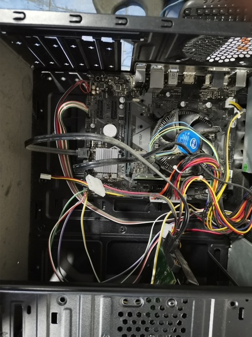
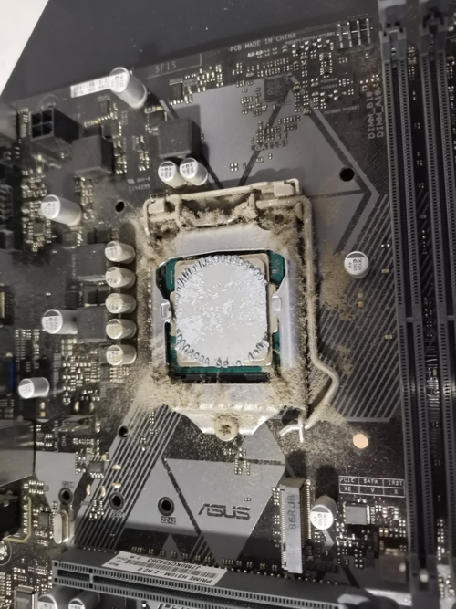
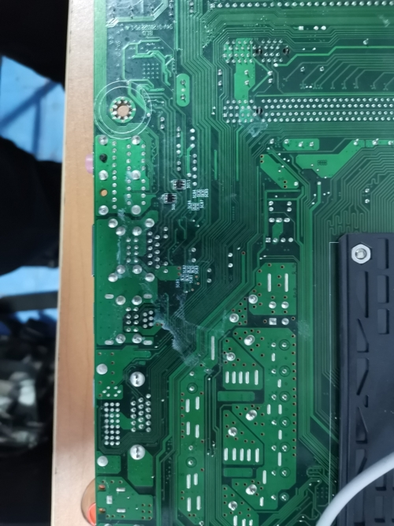
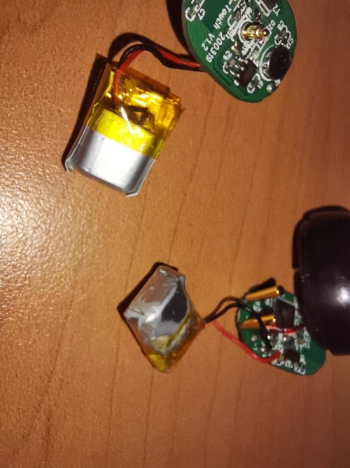
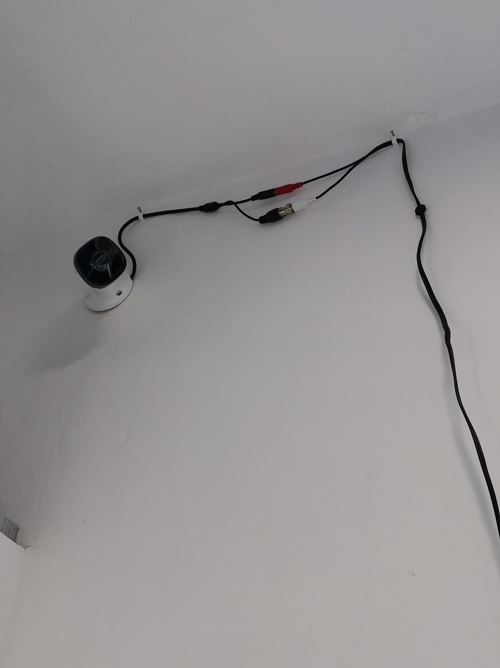
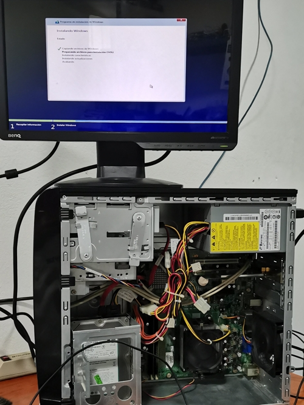

Reparame Servicio Apple Septiembre 2021 - Octubre 2022 Técnico Especialista Apple Actividades realizadas: Reparación a nivel componente Atención a cliente Revisión y actualización de Software Mantenimiento y Actualización de equipos Evidencias: Cambio de Chip GPU Descripción: Mediante calor concentrado en la zona de contacto con la placa madre se realiza el cambio completo de la unidad de procesamiento gráfico dedicado de un iMac 2012. Agosto 2022 Actualicación iMac 2017 Descripción: Apertura de iMac 2017 para mantenimiento y actualización de componentes internos para mayor rendimiento. Mantenimiento preventico Actualización a SSD Migración de información Septiembre 2022 Reballing GPU iMac 2017 Descripción: Cambio completo de soldadura de chip GPU de iMac 2014 de manera manual para puesta posterior en placa base. Junio 2022 Mantenimiento MacBook Pro 2017 Descripción: Mantenimiento completo a una MacBook Pro 2017. Desensable y limpieza de componentes internos del equipo. Cambio de Pasta termica Limpieza de Chasís de aluminio Limpieza de teclado Noviembre 2022 Reconstrucción de Placa Base Descripción: Reconstrucción de pistas y pads perdidos a causa de electrolisís causada por contacto con agua. Febrero 2022 Cambio de Batería iPhone 8 Descripción: Remplazo de batería de iPhone 8 por condición al 78%, se apagaba repentinamente. Octubre 2022
miPcel Octubre 2020 - Mayo 2021 Analista de Sistemas Actividades realizadas: Reparación de equipos de cómputo Manejo de Sucursales Manejo de Bases de Datos Instalación de sistemas de vigilancia Evidencias:  Mantenimiento PC Celeron Descripción: Mantenimiento completo de Gabinete y placa base de un procesador Intel Celeron. Noviembre 2020  Mantenimiento PC Core i3 Descripción: Mantenimiento completo de Gabinete y placa base de un procesador Intel Core i3 de segunda generación. Noviembre 2020  Eliminación de Corrosión en placa base Descripción: Eliminación de marcas de corrosión por humedad en una tarjeta lógica. Proceso de mantenimiento preventivo y testeo de fallas. Noviembre 2020  Instalación de Batería Descripción: Remplazo de baterías de 1.5v para audifonos inalambricos de tipo botón. Diciembre 2020  Instalación de Cámaras Descripción: Instalación de paquete de 4 cámaras dawa para circuito cerrado de vigilancia. Agosto 2020  Instalación de Sistema Operativo Descripción: Instalación de Sistema Operativo y configuración para uso en oficinas. Septiembre 2020
Freelance Octubre 2018 - Octubre 2020 Desarrollador a tiempo parcial Actividades realizadas: Desarrollo Web para PyMEs Desarrollo de módulos con Python Servicio Técnico Desarrollo de soluciones a medida